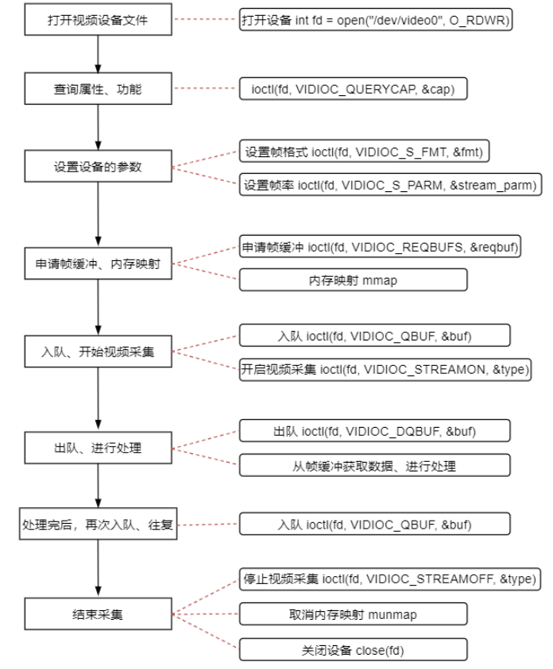
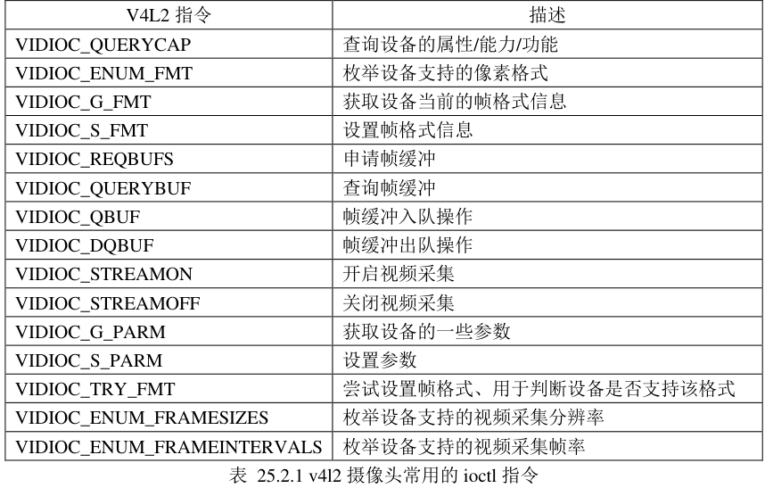
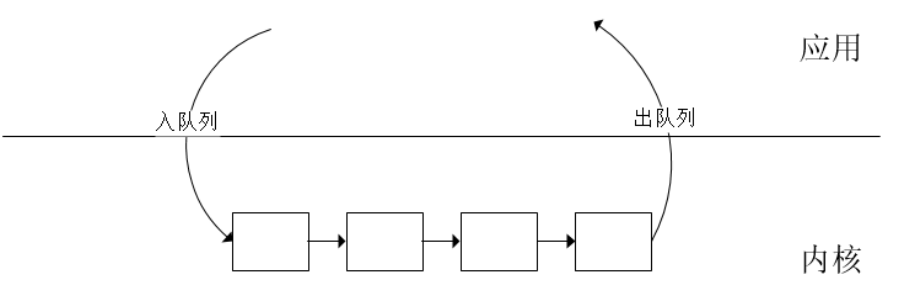

V4L2框架 简介 V4L2是Linux内核中的一套驱动框架，为视频类设备（USB、CSI摄像头…）的驱动 开发和应用 层提供了一套统一的接口规范
V4L2将视频设备视为字符设备，例如/dev/videoX，用户可以通过标准的文件系统接口（如ioctl、open、read、write等）与之交互
在音视频开发领域，许多框架比如FFmpeg都是以V4L2作为基础开发的，所以这个框架还是比较重要的
工作流程 
从流程图中可以看到，几乎对摄像头的所有操作都是通过 ioctl()来完成，搭配不同的 V4L2 指令请求不同的操作，这些指令定义在头文件 linux/videodev2.h 中

打开设备 打开设备其实和别的类型的设备一样，用open()系统调用就行了
1 fd = open("/dev/video0" , O_RDWR);
查询属性 在V4L2中，使用ioctl()封装了一个指令和结构体用于属性的查询
1 2 3 4 5 6 7 8 9 10 11 ioctl(int fd, VIDIOC_QUERYCAP, struct v4l2_capability *cap); struct v4l2_capability { __u8 driver[16 ]; __u8 card[32 ]; __u8 bus_info[32 ]; __u32 version; __u32 capabilities; __u32 device_caps; __u32 reserved[3 ]; };
我们重点关注的是 capabilities 字段，该字段描述了设备拥有的能力，比如支持视频输入/输出、音频输出… 对于==摄像头==而言，该字段必须包括V4L2_CAP_VIDEO_CAPTURE这一项
设置参数 当我们在使用摄像头进行画面采集之前，需要设置一些参数，比如：
摄像头的像素格式：RGB、YUV、MJPEG…
采集的分辨率
帧率：15 fps，30 fps…
枚举支持的参数 V4L2的ioctl()中同样封装了对应的宏和结构体来枚举所支持的各个参数
（1）枚举所有支持的像素格式
1 2 3 4 5 6 7 8 9 10 ioctl(int fd, VIDIOC_ENUM_FMT, struct v4l2_fmtdesc *fmtdesc); struct v4l2_fmtdesc { __u32 index; __u32 type; __u32 flags; __u8 description[32 ]; __u32 pixelformat; __u32 reserved[4 ]; };
index 表示编号，在枚举之前，需将其设置为 0，然后每次 ioctl()调用之后将其值加 1。一次 ioctl()调用只能得到一种像素格式的信息，如果设备支持多种像素格式，则需要循环调用多次，通过 index 来控制index 从 0 开始，调用一次 ioctl()之后加 1，直到 ioctl()调用失败，表示已经将所有像素格式都枚举出来了；所以 index 就是一个编号，获取 index 编号指定的像素格式。description 字段是一个简单地描述性字符串，简单描述 pixelformat 像素格式。pixelformat 字段则是对应的像素格式编号，这是一个无符号 32 位数据，每一种像素格式都会使用一个u32 类型数据来表示type 字段表示我们要获取设备的哪种功能 对应的像素格式，因为有些设备它可能即支持视频采集功能、又支持视频输出等其它的功能。在调用参数获取之前，需要对其设置。对于摄像头，设置成V4L2_BUF_TYPE_VIDEO_CAPTURE就行了
使用示例如下：
1 2 3 4 5 6 7 8 9 10 struct v4l2_fmtdesc fmtdesc =0 };fmtdesc.index = 0 ; fmtdesc.type = V4L2_BUF_TYPE_VIDEO_CAPTURE; while (0 == ioctl(v4l2_fd, VIDIOC_ENUM_FMT, &fmtdesc)){ ... fmtdesc.index++; }
（2）枚举所有支持的分辨率
1 2 3 4 5 6 7 8 9 10 11 12 13 14 15 16 17 18 19 20 21 22 23 24 25 26 27 28 ioctl(int fd, VIDIOC_ENUM_FRAMESIZES, struct v4l2_frmsizeenum *frmsize); struct v4l2_frmsize_discrete { __u32 width; __u32 height; }; struct v4l2_frmsize_stepwise { __u32 min_width; __u32 max_width; __u32 step_width; __u32 min_height; __u32 max_height; __u32 step_height; }; struct v4l2_frmsizeenum { __u32 index; __u32 pixel_format; __u32 type; union { struct v4l2_frmsize_discrete discrete ; struct v4l2_frmsize_stepwise stepwise ; }; __u32 reserved[2 ]; };
index：同上pixel_format：像素格式type：同上
可以看到struct v4l2_frmsizeenum中有个union格式的共同体，当type为输入设备时，v4l2_frmsize_discrete生效，描述了视频帧的大小
使用示例：
1 2 3 4 5 6 7 8 struct v4l2_frmsizeenum frmsize ;frmsize.index = 0 ; frmsize.type = V4L2_BUF_TYPE_VIDEO_CAPTURE; frmsize.pixel_format = V4L2_PIX_FMT_RGB565; while (0 == ioctl(fd, VIDIOC_ENUM_FRAMESIZES, &frmsize)) { printf ("frame_size<%d*%d>\n" , frmsize.discrete.width, frmsize.discrete.height); frmsize.index++; }
（3）枚举所有支持的帧率
1 2 3 4 5 6 7 8 9 10 11 12 13 14 15 16 17 18 19 20 21 ioctl(int fd, VIDIOC_ENUM_FRAMEINTERVALS, struct v4l2_frmivalenum *frmival); struct v4l2_frmivalenum { __u32 index; __u32 pixel_format; __u32 width; __u32 height; __u32 type; union { struct v4l2_fract discrete ; struct v4l2_frmival_stepwise stepwise ; }; __u32 reserved[2 ]; }; struct v4l2_fract { __u32 numerator; __u32 denominator; };
当type为输入设备时，union中的discrete生效，通过denominator / numerator即可计算出帧率
使用示例
1 2 3 4 5 6 7 8 9 10 struct v4l2_frmivalenum frmival ;frmival.index = 0 ; frmival.type = V4L2_BUF_TYPE_VIDEO_CAPTURE; frmival.pixel_format = V4L2_PIX_FMT_RGB565; frmival.width = 640 ; frmival.height = 480 ; while (0 == ioctl(fd, VIDIOC_ENUM_FRAMEINTERVALS, &frmival)) { printf ("Frame interval<%ffps> " , frmival.discrete.denominator / frmival.discrete.numerator); frmival.index++; }
获取/设置帧格式 帧格式包括分辨率 和像素格式
1 2 3 4 5 6 7 8 9 10 11 12 13 14 15 16 17 int ioctl (int fd, VIDIOC_G_FMT, struct v4l2_format *fmt) ;int ioctl (int fd, VIDIOC_S_FMT, struct v4l2_format *fmt) ;struct v4l2_format { __u32 type; union { struct v4l2_pix_format pix ; struct v4l2_pix_format_mplane pix_mp ; struct v4l2_window win ; struct v4l2_vbi_format vbi ; struct v4l2_sliced_vbi_format sliced ; struct v4l2_sdr_format sdr ; __u8 raw_data[200 ]; } fmt; };
当type为输入设备时，union为v4l2_pix_format代表了视频帧格式
1 2 3 4 5 6 7 8 9 10 11 12 13 struct v4l2_pix_format { __u32 width; __u32 height; __u32 pixelformat; __u32 field; __u32 bytesperline; __u32 sizeimage; __u32 colorspace; __u32 priv; __u32 flags; __u32 ycbcr_enc; __u32 quantization; };
使用示例：
1 2 3 4 5 6 7 8 9 10 11 12 13 14 15 16 17 struct v4l2_format fmt ;fmt.type = V4L2_BUF_TYPE_VIDEO_CAPTURE; if (0 > ioctl(fd, VIDIOC_G_FMT, &fmt)) { perror("ioctl error" ); return -1 ; } printf ("width:%d, height:%d format:%d\n" , fmt.fmt.pix.width, fmt.fmt.pix.height, fmt.fmt.pix.pixelformat);fmt.fmt.pix.width = 800 ; fmt.fmt.pix.height = 480 ; fmt.fmt.pix.pixelformat = V4L2_PIX_FMT_RGB565; if (0 > ioctl(fd, VIDIOC_S_FMT, &fmt)) { perror("ioctl error" ); return -1 ;}
注意：如果我们设置的参数硬件不支持，那么实际上它不会真的把帧格式设置成我们输入的参数，所以最好在设置完后再读一下看看到底有跟我们设置的一样不
获取/设置视频流参数 视频流参数主要包括采集帧率
1 2 3 4 5 6 7 8 9 10 11 12 13 14 15 16 17 18 19 20 21 22 ioctl(int fd, VIDIOC_S_PARM, struct v4l2_streamparm *streamparm); ioctl(int fd, VIDIOC_G_PARM, struct v4l2_streamparm *streamparm); struct v4l2_streamparm { __u32 type; union { struct v4l2_captureparm capture ; struct v4l2_outputparm output ; __u8 raw_data[200 ]; } parm; }; struct v4l2_captureparm { __u32 capability; __u32 capturemode; struct v4l2_fract timeperframe ; __u32 extendedmode; __u32 readbuffers; __u32 reserved[4 ]; };
当设备为采集时，union为v4l2_captureparm类型
capability：以下参数的组合
#define V4L2_MODE_HIGHQUALITY 0x0001 /* 高品质成像模式 */
#define V4L2_CAP_TIMEPERFRAME 0x1000 /* 支持设置 timeperframe字段 */
1 2 3 4 5 6 7 8 9 10 11 12 13 14 15 16 17 18 19 20 - `timeperframe`：用于设置帧率，只有`capability`包含`V4L2_CAP_TIMEPERFRAME`时才可以设置 使用示例 ```c struct v4l2_streamparm streamparm; streamparm.type = V4L2_BUF_TYPE_VIDEO_CAPTURE; ioctl(v4l2_fd, VIDIOC_G_PARM, &streamparm); /** 判断是否支持帧率设置 **/ if (V4L2_CAP_TIMEPERFRAME & streamparm.parm.capture.capability) { streamparm.parm.capture.timeperframe.numerator = 1; streamparm.parm.capture.timeperframe.denominator = 30;//30fps if (0 > ioctl(v4l2_fd, VIDIOC_S_PARM, &streamparm)) {//设置参数 fprintf(stderr, "ioctl error: VIDIOC_S_PARM: %s\n", strerror(errno)); return -1; } } else fprintf(stderr, "不支持帧率设置");
申请帧缓冲及内存映射 对于摄像头数据的读取其实有多种方式，这取决于查询设备属性时获得的struct v4l2_capability里的capabilities字段：
V4L2_CAP_READWRITE：表明设备具有通过read I/O操作进行读取的能力V4L2_CAP_STREAMING：表明设备具有通过streaming I/O操作进行读取的能力
我们一般都用方式2来读取，此时需要在内核里申请若干个帧缓冲区，并把他们放到V4L2的队列里，开启采图后，V4L2会依次将采集到的画面填充到队列里的帧缓冲块，用户在应用层取出队列里的帧缓冲块即可拿到数据
这里和一般的队列使用有点区别：一般的队列都是先采集到数据再放到队列里，而V4L2需要先把帧缓冲块放到队列里再开启采集，读完数据后还要再放回队列。
可以理解为摄像头采集到的数据必须放到帧缓冲里，而且帧缓冲的需要自己申请，V4L2不会自动申请

1 2 3 4 5 6 7 8 9 10 11 12 13 14 15 16 17 18 19 20 21 22 23 24 25 26 27 28 29 30 31 32 33 34 35 36 ioctl(int fd, VIDIOC_REQBUFS, struct v4l2_requestbuffers *reqbuf); ioctl(int fd, VIDIOC_QUERYBUF, struct v4l2_buffer *buf); struct v4l2_requestbuffers { __u32 count; __u32 type; __u32 memory; __u32 reserved[2 ]; }; struct v4l2_buffer { __u32 index; __u32 type; __u32 bytesused; __u32 flags; __u32 field; struct timeval timestamp ; struct v4l2_timecode timecode ; __u32 sequence; __u32 memory; union { __u32 offset; unsigned long userptr; struct v4l2_plane *planes ; __s32 fd; } m; __u32 length; __u32 reserved2; __u32 reserved; };
其中比较关键的字段是memory，用于设置应用层访问缓冲区的方式
1 2 3 4 5 6 enum v4l2_memory { V4L2_MEMORY_MMAP = 1 , V4L2_MEMORY_USERPTR = 2 , V4L2_MEMORY_OVERLAY = 3 , V4L2_MEMORY_DMABUF = 4 , };
最快的方式是V4L2_MEMORY_MMAP，相当于使用了mmap()，直接把内核里的这段缓冲区的内存映射到用户进程的内存空间中，从而避免了传统I/O操作中数据从内核缓冲—>用户缓冲区的拷贝，并避免了DMA操作的额外开销。
在申请了帧缓冲区后，需要手动用mmap()进行内存映射
使用示例：
1 2 3 4 5 6 7 8 9 10 11 12 13 14 15 16 17 18 19 20 21 22 struct v4l2_requestbuffers reqbuf =0 };struct v4l2_buffer buf =0 };reqbuf.count = FRAMEBUFFER_COUNT; reqbuf.type = V4L2_BUF_TYPE_VIDEO_CAPTURE; reqbuf.memory = V4L2_MEMORY_MMAP; if (0 > ioctl(v4l2_fd, VIDIOC_REQBUFS, &reqbuf)){ fprintf (stderr , "ioctl error: VIDIOC_REQBUFS: %s\n" , strerror(errno)); return -1 ; } buf.type = V4L2_BUF_TYPE_VIDEO_CAPTURE; buf.memory = V4L2_MEMORY_MMAP; for (buf.index = 0 ; buf.index < FRAMEBUFFER_COUNT; buf.index++){ ioctl(v4l2_fd, VIDIOC_QUERYBUF, &buf); buf_infos[buf.index].length = buf.length; buf_infos[buf.index].start = mmap(NULL , buf.length, PROT_READ | PROT_WRITE, MAP_SHARED, v4l2_fd, buf.m.offset); }
帧缓冲入队 1 2 ioctl(int fd, VIDIOC_QBUF, struct v4l2_buffer *buf);
示例：
1 2 3 4 5 6 7 8 9 10 struct v4l2_buffer buf ;buf.type = V4L2_BUF_TYPE_VIDEO_CAPTURE; buf.memory = V4L2_MEMORY_MMAP; for (buf.index = 0 ; buf.index < 3 ; buf.index++) { if (0 > ioctl(fd, VIDIOC_QBUF, &buf)) { perror("ioctl error" ); return -1 ; } }
开启采集 1 2 3 4 ioctl(int fd, VIDIOC_STREAMON, int *type); ioctl(int fd, VIDIOC_STREAMOFF, int *type);
数据读取 数据读取只需要从V4L2的队列里拿出帧缓冲块就行了，不过如果要继续采图的话，还需要再把取出的帧缓冲重新入队
1 2 ioctl(int fd, VIDIOC_DQBUF, struct v4l2_buffer *buf);
示例：
1 2 3 4 5 6 7 8 9 10 11 12 13 buf.type = V4L2_BUF_TYPE_VIDEO_CAPTURE; buf.memory = V4L2_MEMORY_MMAP; for (;;){ for (buf.index = 0 ; buf.index < FRAMEBUFFER_COUNT; buf.index++) { ioctl(v4l2_fd, VIDIOC_DQBUF, &buf); ...... ioctl(v4l2_fd, VIDIOC_QBUF, &buf); } }